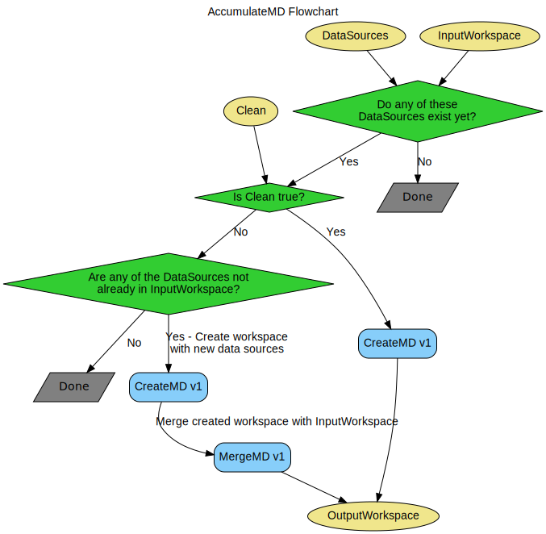

\(\renewcommand\AA{\unicode{x212B}}\)
AccumulateMD v1¶
{kind=link}
AccumulateMD dialog.¶
Summary¶
Add new data to an existing MDHistoWorkspace
See Also¶
Properties¶
Name |
Direction |
Type |
Default |
Description |
|---|---|---|---|---|
InputWorkspace |
Input |
Mandatory |
An input MDEventWorkspace to append data to. |
|
OutputWorkspace |
Output |
Mandatory |
MDEventWorkspace with new data appended. |
|
DataSources |
Input |
str list |
Mandatory |
Input workspaces to process, or filenames to load and process |
EFix |
Input |
dbl list |
datasource energy values in meV |
|
Emode |
Input |
string |
Direct |
Analysis mode [‘Elastic’, ‘Direct’, ‘Indirect’]. Allowed values: [‘Elastic’, ‘Direct’, ‘Indirect’] |
Alatt |
Input |
dbl list |
Mandatory |
Lattice parameters |
Angdeg |
Input |
dbl list |
Mandatory |
Lattice angles |
u |
Input |
dbl list |
Mandatory |
Lattice vector parallel to neutron beam |
v |
Input |
dbl list |
Mandatory |
Lattice vector perpendicular to neutron beam in the horizontal plane |
Psi |
Input |
dbl list |
Psi rotation in degrees. Optional or one entry per run. |
|
Gl |
Input |
dbl list |
gl rotation in degrees. Optional or one entry per run. |
|
Gs |
Input |
dbl list |
gs rotation in degrees. Optional or one entry per run. |
|
InPlace |
Input |
boolean |
True |
Execute conversions to MD and Merge in one-step. Less memory overhead. |
Clean |
Input |
boolean |
False |
Create workspace from fresh rather than appending to existing workspace data. |
Filename |
Input |
string |
The name of the Nexus file to write, as a full or relative path. Only used if FileBackEnd is true. Allowed extensions: [‘.nxs’] |
|
FileBackEnd |
Input |
boolean |
False |
If true, Filename must also be specified. The algorithm will create the specified file in addition to an output workspace. The workspace will load data from the file on demand in order to reduce memory use. |
Description¶
This workflow algorithm appends new data to an existing multidimensional workspace. It allows the accumulation of data in a single MDWorkspace as you go, e.g. during an experiment.
Using the FileBackEnd and Filename properties the algorithm can produce a file-backed workspace. Note that this will significantly increase the execution time of the algorithm.
Input properties which are not described here are identical to those in the CreateMD v1 algorithm.
InputWorkspace¶
The MDEventWorkspace to append data to.
DataSources¶
These can be workspace names, file names or full file paths. Not all of the data need to exist when the algorithm is called. If data are named which have previously been appended to the workspace they will not be appended again. Note that data are known by name, it is therefore possible to append the same data again if the data source is renamed.
Clean¶
It is possible to get confused about what data has been included in an MDWorkspace if it is built up slowly over an experiment. Use this option to start afresh; it creates a new workspace using all of the data in DataSources which are available, rather then appending to the existing workspace.
Workflow¶
Usage¶
Simple Example
# Create some sample data
sample_data_1 = CreateSimulationWorkspace(Instrument='MAR', BinParams=[-3,1,3], UnitX='DeltaE')
AddSampleLog(Workspace=sample_data_1,LogName='Ei',LogText='3.0',LogType='Number')
sample_data_2 = CreateSimulationWorkspace(Instrument='MAR', BinParams=[-3,1,3], UnitX='DeltaE')
AddSampleLog(Workspace=sample_data_2,LogName='Ei',LogText='3.0',LogType='Number')
# Create an MDWorkspace withdata from sample_data_1
md_ws = CreateMD(sample_data_1, Emode='Direct', Alatt=[1.4165, 1.4165,1.4165], Angdeg=[90, 90, 90], u=[1, 0, 0,], v=[0,1,0])
# Append data from sample_data_2 to the existing workspace
# Note: sample_data_1 will not be appended as it is already in the workspace
# sample_data_3 will not be appended as it does not exist
acc_ws = AccumulateMD(md_ws, 'sample_data_1,sample_data_2,sample_data_3', Alatt=[1.4165, 1.4165, 1.4165], Angdeg=[90, 90, 90], u=[1, 0, 0,], v=[0,1,0])
# acc_ws should have double the number of events that md_ws has
print("There are {} events in each of the two data workspaces.".format(md_ws.getNEvents()))
print("The accumulated data workspace contains {} events.".format(acc_ws.getNEvents()))
Output:
There are 5508 events in each of the two data workspaces.
The accumulated data workspace contains 11016 events.
Categories: AlgorithmIndex | MDAlgorithms
Source¶
C++ header: AccumulateMD.h
C++ source: AccumulateMD.cpp